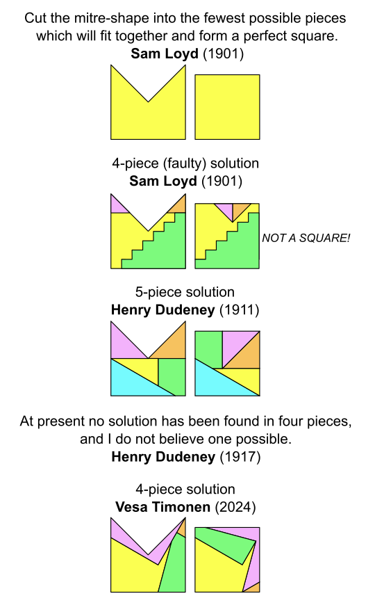
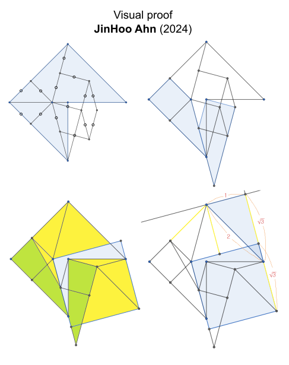

MITRE DISSECTIONS
HISTORY
Dissection problems are ancient old problems that has entertained humans for centuries.
One of the oldest dissection problem is square trisection problem where one has to divide a large square into a minimum number of polygons which will fit together and for three identical squares. First 9-piece solution is from around 1000 AD, 8-piece solution around 1400 AD, 7-piece solution 1877 and first 6-piece solution 1891. [https://arxiv.org/pdf/1012.0827]
Classical dissection problems are how to dissect a regular n-gon into a k-gon. [https://mathworld.wolfram.com/Dissection.html][http://gavin-theobald.uk/HTML/Index.html]
Mitre puzzle
The dissections problems were very popular in magazines late 1800 and beginning of 1900- and often seen on puzzle columns by Sam Loyd and Henry Dudeney.
Around mid 1800 there was a problem to divide mitre shape into 4 congruent parts. Ther ethe solution was that part were not whole. They consistet of two pieces each.
1901 Sam Loyd preneted a variation of this problem where pieces has to be whole but need not to be congruent.
He gave a 4-piece solution but unfortunately the solution was not accurate. Henry Dudeney pointed out this fialure and presented his own 5-piece solution.
Since then 4-piece solution has been eluded all attempts to find itself but recently with help of software it has finally found. In the solution there is one piece (green) that has to be flipped over and there is some debate whether this is allowed or not. So far no one has found a 4-piece solution wihtout flipping.

PROOF

SOFTWARE
(Software algorithms.)
5-PIECE SOLUTIONS
REFERENCES
| [Blanvillain, 2010] | Blanvillain, Christian; Pach, Janos (2010). "Square Trisection". |
| [Dudeney, 1911a] | Dudeney, Henry Ernest (1911). "Perplexities". The Strand Magazine Vol. 41. (p. 746). |
| [Dudeney, 1911b] | Dudeney, Henry Ernest (1911). "Perplexities". The Strand Magazine Vol. 42. (p. 108). |
| [Dudeney, 1917] | Dudeney, Henry Ernest (1917). Amusements In Mathematics (p. 70). |
| [Frederickson, 1997] | Frederickson, Greg Norman (1997). Dissections: Plane & Fancy. |
| [Loyd, 1901a] | Loyd, Sam (Sunday, July 21, 1901). The Philadelphia Inquirer (p. 33). |
| [Loyd, 1901b] | Loyd, Sam (Sunday, August 11, 1901). The Philadelphia Inquirer (p. 31). |
| [Perigal, 1891] | Perigal, Henry (1891). Geometric Dissections and Transformations. |
| [Theobald web] | Theobald, Gavin (2024, May 31). "Geometric Dissections". |
| [Wei web] | Wei, Fu (2024, May 31). "Origami idea solves century-old math problem". |
| [Wolfram web] | Theobald, Gavin; Weisstein, Eric W. "Dissection". |